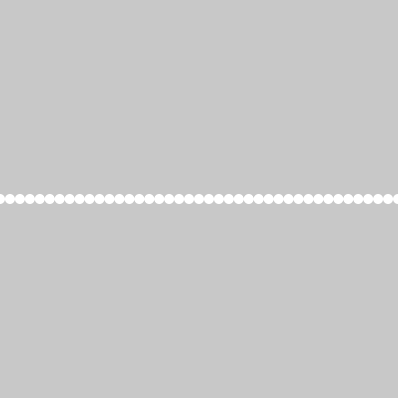
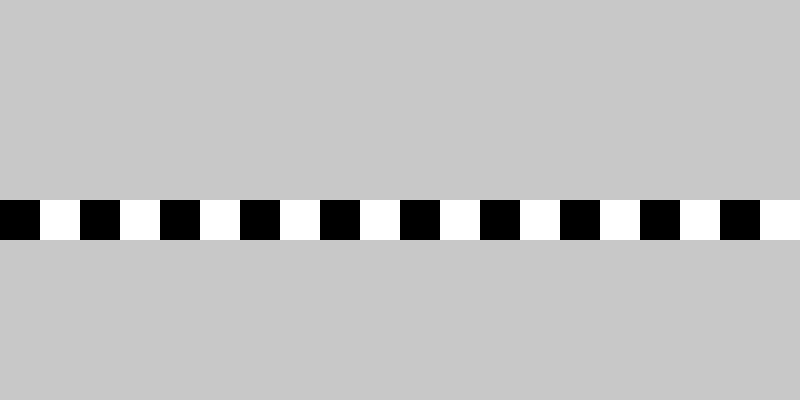
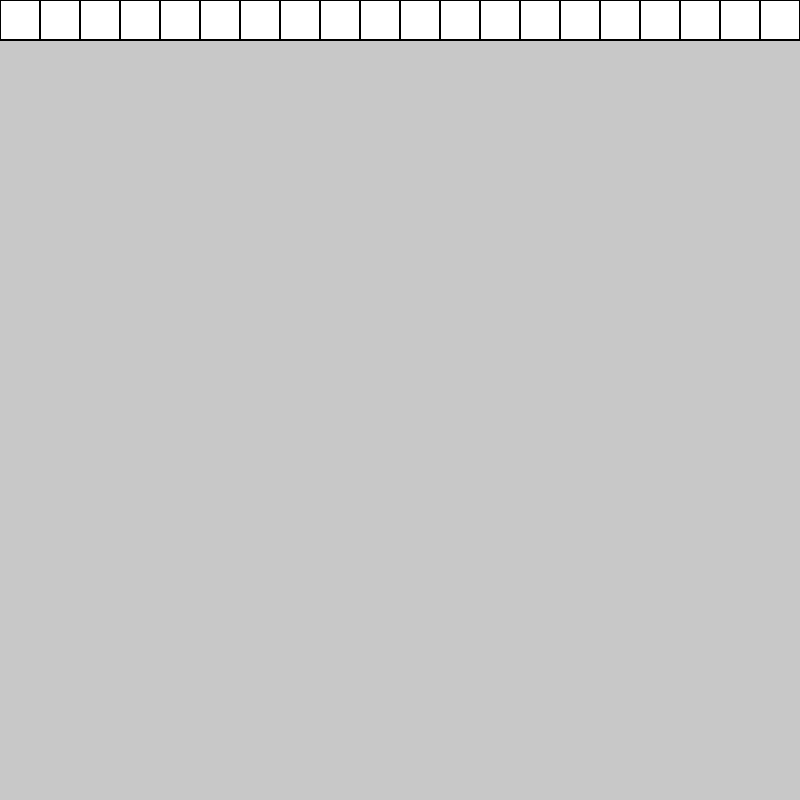
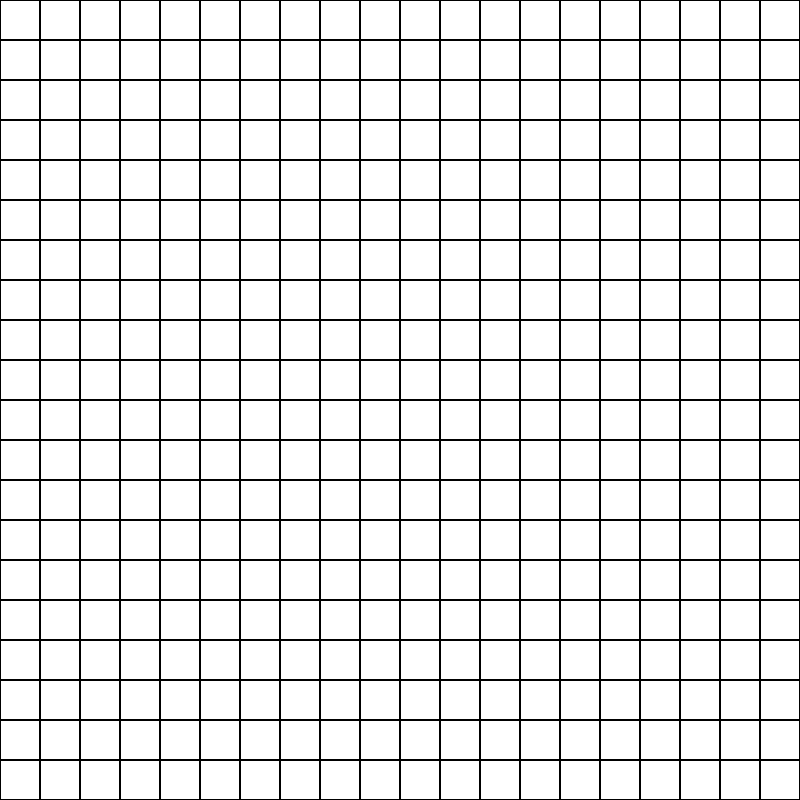
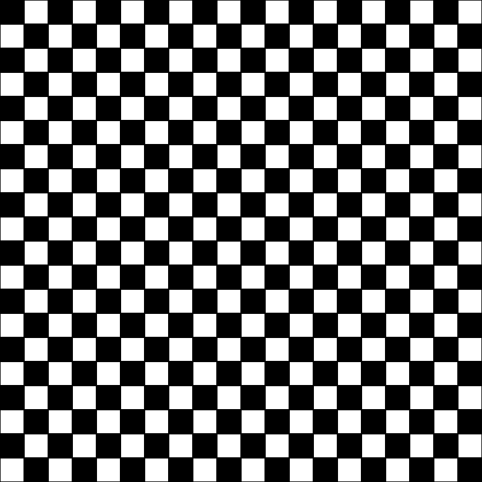

Repeat
RECAP:
if- boolean expressions
- relational operators
elseandelse if- logical operators
- boolean variables
PLAN:
whileloop- local variables
forloops- nested loops
Why use Loops and Iteration?
You may have experienced with programming thus far, that you want to repeat a given line of code over and over again.
For example, if I wanted to draw seven circles across might canvas, I might write a program like this:
function setup() {
createCanvas(400, 400);
}
function draw() {
background(200);
noStroke();
circle(50, 200, 50);
circle(100, 200, 50);
circle(150, 200, 50);
circle(200, 200, 50);
circle(250, 200, 50);
circle(300, 200, 50);
circle(350, 200, 50);
}
Or if I wanted to draw 40 circles, I would have to spend a lot of time writing this program:

Within JavaScript, we can use certain keywords to create blocks of code that repeat for a given duration, letting us create programs with code that repeats.
There are two main ways of code repeated structures using iteration:
whileloopsforloops
The majority of the time, it is best to use a for loop.
While loops
while loops are similar to if statements, in that a while loop will run if a certain condition is true.
Comparing a while loop to an if statement, we can see that their structure is similar:
The important distinction, however, is that an if statement will run once, and a while loop will run continuously while the provided boolean expression returns a value of true.
Exit Conditions
When using a while loop, we need to make use of an exit condition. An exit condition is a condition that our code moves towards. When the condition is met, our sketch breaks out of the while loop.
For example, in the below sketch, the value of x is incrementing 50 each time the while loop runs. When the value of x is greater than the value of width, the while loop will stop. In other words, the while loop will only run if the value of x is less than our width.
Importantly, we must reset x back to 50 at the beginning of each draw loop, otherwise, after the first time our while loop runs, the value of x will be stuck at 400.
let x;
function setup() {
createCanvas(400, 400);
}
function draw() {
background(200);
noStroke();
x = 50;
while (x < width) {
circle(x, height / 2, 50);
x += 50;
}
}

Local Variables
So far in the course, we have only been using global variables. Global variables are written at the top of our sketch and are accessible by any block of code within our sketch.
Local variables are declared within a block of code and can only be accessed by the block of code in which they are declared as well as any blocks of code within that block.
For example, since we are only using the value of x within our while loop, we can declare and initialize our variable of x within our draw loop:
function setup() {
createCanvas(400, 400);
}
function draw() {
background(200);
noStroke();
let x = 50;
while (x < width) {
circle(x, height / 2, 50);
x += 50;
}
}
For Loops
while loops, overall, are tedious to write. There are certain cases in which a while loop is the correct structure to use for a program, however, most of the time, we can use the simpler, for loop.
The for loop is written as a single line of code:
A for loop is made up of 3 parts
- Initialization
let x = 0; - Boolean Test
x < width; - Incrementation Operation
x = x+10;
We can recreate the same while loop program with a for loop using this code:
function setup() {
createCanvas(400, 400);
}
function draw() {
background(200);
noStroke();
for(let x = 50; x < width; x=x+50){
circle(x,height/2,50);
}
}
Modulo (%)
Modulo (%) is an arithmetic operator that will return the remainder of one number divided by another number.
For example, I use a % operator to check if a number is even by checking the remainder of that number divided by 2. If a given number divides evenly by 2, or, in other words, its remainder divided by 2 is equal to 0, I know that number is an even number.
For example:
I can use this method to create alternating colors within a for loop:
function setup() {
createCanvas(400, 200);
}
function draw() {
background(200);
noStroke();
for (let x = 0; x < width; x = x + 20) {
//make variable to hold step amount (eg.1,2,3,4...)
let step = x / 20;
//see if step is divisible by 2
if (step % 2 == 0) {
fill(0);
} else {
fill(255);
}
square(x, height / 2, 20);
}
}

Nested loops
Multiple loops can be nested inside of each other to create loops that loop!
A common use case for a nested loop is to create a grid:
First, create a for loop that draws a line of boxes across our screen:
function setup() {
createCanvas(400, 400);
}
function draw() {
background(200);
for (let x = 0; x < width; x = x + 20) {
square(x, 0, 20);
}
}

Next, we can iterate on that for loop using another for loop. We also need to replace the y coordinate postion of our square with the value of y. This will draw our same row of squares at different heights across our canvas.
function setup() {
createCanvas(400, 400);
}
function draw() {
background(200);
for (let y = 0; y < height; y += 20) {
for (let x = 0; x < width; x = x + 20) {
square(x, y, 20);
}
}
}

We can also use % to alternate our colors:
function setup() {
createCanvas(400, 400);
}
function draw() {
background(200);
//noStroke();
for (let y = 0; y < height; y += 20) {
for (let x = 0; x < width; x = x + 20) {
//make variable to hold step amount (eg.1,2,3,4...)
let stepX = x / 20;
let stepY = y / 20;
//add the each x step with the current y step
let step = stepX + stepY;
//see if step is divisible by 2
if (step % 2 == 0) {
fill(0);
} else {
fill(255);
}
square(x, y, 20);
}
}
}
